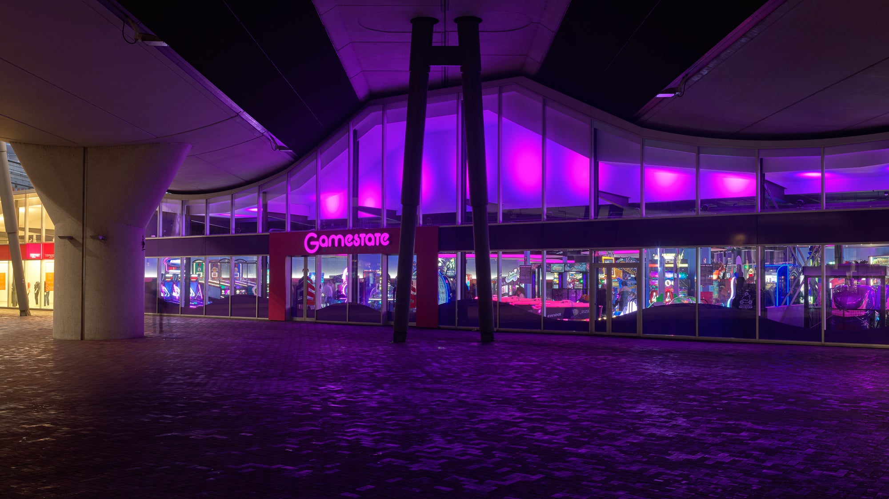
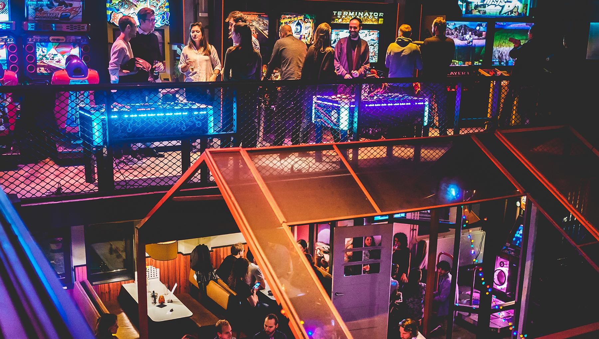

Game-Hallen
Stap binnen in een wereld waar gaming tot leven komt!
Bij game-hallen beleef je een ongeëvenaarde gamingervaring,
perfect voor zowel casual gamers als enthousiaste veteranen.
Gamestate Amsterdam

Bij Gamestate kun je wel honderen spellen spelen en altijd winnen. Ze hebben veel variatie
qua single players en multiplayers, zo is er voor iedereen wel wat te doen. Je kunt de spelen d.m.v een
'Gamestate Playcard' aan te schaffen en deze op te laden.
Het opladen kan bij de balie of via een oplaadkiosk. De Playcard aanschaffen kan ook via de balie en
oplaadkiosk, maar dit kan tegenwoordig ook online via hun
online webshop.
Als je al een Playcard hebt kun je deze ook via de online webshop opladen.
Als je een nieuwe Playcard aanschaft heb je een paar keuzen:
- 60 Kredieten - €27,99 (excl. €2,95 verzendkosten)
- 120 Kredieten - €49,99 (excl. €2,95 verzendkosten)
- 600 Kredieten - €249,99 (excl. €2,95 verzendkosten)
Er zijn verschillende betalingsmogelijkheden:
- Creditcards:
- VISA
- mastercard
- American Express
- Apple Pay & Google Pay
- iDeal, SOFORT & Bankontact
Gamestate Amsterdam is van Maandag - Zondag open, van 12:00 - 00:00 (tijdens feestdagen gelden andere
openingstijden).
Je kunt hun bereiken via info@gamestate.nl en via 020 0224 9888.
Johan Cruiff Boulevard 183-187
1107 EJ Amsterdam, Nederland
Routebeschrijving

Molly's Arena
Bij Molly's Arena draait het om de anime wereld en de game cultuur daaromheen.
Je kunt los van de leuke spellen ook nog eens heerlijke ramen eten aan de ramenbar. Bij de ramenbar kun
je
ook genieten van de beste fluffy pancakes.
Ze hebben een flink aantal spel machines die je zowel alleen als met z'n tweeën kunt bespelen.
Als je van anime en de Japandse eet cultuur houdt is dit dus de speelhal voor jou.
Ook hebben ze een aantal VR Simulators tot hun beschikking. Deze zijn het ook waard om te proberen.
Molly's Arena werkt ook met een game card die je kunt opladen. Als de de game card al hebt kun je deze
opladen bij de kassa.
Als je nog geen game card hebt kun je deze aanschaffen bij de kassen. Alleen is het voordeliger om hem
online te kopen aangezien ze een online discount hebben op hun
website.
De prijzen bij aanschaf via de website zijn:
- One Piece Deal - 35 game credits - €24,99
- Naruto Deal - 70 game credits - €49,99 (meest gekozen)
- Dragon Ball Deal - 100 game credits - €74,99
De prijzen bij aanschaf aan de kassa zijn:
- One Piece Deal - 35 game credits - €37,50
- Naruto Deal - 70 game credits - €72,50 (meest gekozen)
- Dragon Ball Deal - 100 game credits - €102,50
De betalingsmogelijkheden online zijn:
- Creditcards:
- VISA
- mastercard
- American Express
- Union Pay
- Apple Pay
- iDeal, SOFORT, Bankontact, EPS, giropay en Przelewy24 (p24)
Bij de kassa op locatie is het alleen mogelijk om te pinnen.
Molly's Arena is van Woensdag - Zondag open van 12:00 - 22:00.
Je kunt hen bereiken via een contact formulier op hun website.
Osdorpplein 771
1068 TC Amsterdam, Nederland
Routebeschrijving
TonTon Club Westergas

De TonTon Club is een bekende keten van amusementshallen en bars in Amsterdam.
Ze staan bekend om hun mix van klassieke en moderne arcade games, flipperkasten,
en andere vormen van interactief amusement. Hier zijn enkele kenmerken van de
TonTon Club in Amsterdam:
- Arcade Games en Flipperkasten: De TonTon Club biedt een verscheidenheid aan klassieke arcade games,
evenals moderne videogames. Daarnaast hebben ze vaak een indrukwekkende verzameling flipperkasten.
- Cocktails en Drankjes: Naast het spelen van games kun je bij TonTon Club genieten van een
assortiment aan drankjes, waaronder cocktails, bier en andere dranken.
- Evenementen en Feesten: Soms organiseren ze speciale evenementen en feesten, waardoor de ervaring
nog levendiger wordt. Dit kan variëren van gametoernooien tot themafeesten.
Je kunt via hun website een
reservering maken voor een tafel.
Voor een reservering van 8+ personen moet je een mail sturen naar reserveren@tontonclub.nl.
Voor het bestellen van alleen drankjes en het spelen van de spelletjes kun je gewoon naar binnen lopen.
De openingstijden zijn:
- Maandag - Donderdag 16:00 - 01:00
- Vrijdag 16:00 - tot laat
- Zaterdag 13:00 - tot laat
- Zondag 13:00 - 01:00
Je kunt hun bereiken via reserveren@tontonclub.nl en via +31(0)20 244 4633.
Polonceaukade 27
1014 DA Amsterdam, Nederland
Routebeschrijving
Reserveer hier een
parkeerplek.